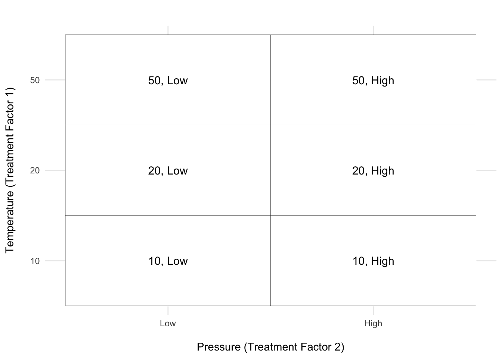

2 Terminology
Treatment factors, treatment levels and treatments:
The treatment factor is the factor or variable that the experimenter actively manipulates to measure its effect on the response. All factors/variables that are investigated, controlled, manipulated, thought to influence the response, are called the treatment factors. They become the explanatory variables (mostly categorical) in the model. For each treatment factor, we actively choose a set of levels. For example, the treatment factor “temperature” can have levels 10, 20, and 50°C. If temperature is the only treatment factor in the experiment, the treatments1 will also be 10, 20, and 50°C.
1 The terminology of treatments can be traced back to 1920’s when it was first applied by Ronald Fisher in the agricultural sciences. He is often refered to as the Founder of Statistics! Have a look at the very first application of ANOVA here and also a very nice article describng the history of statistics and his contribution to the field.
If we manipulate more than one factor (e.g., temperature and pressure), we have two treatment factors. When several treatment factors are manipulated, the experiment is called factorial and the treatments are all possible combinations of the factor levels. If we have pressure levels “low” and “high,” there are 6 treatments in total:
In the figure above, there are two treatment factors: Temperature (on the y-axis) and Pressure (on the x-axis). The axis ticks represent the levels of each treatment factor, and the blocks within the grid represent the treatments, which are specific combinations of the levels of Temperature and Pressure. Each treatment is labeled with the corresponding combination of levels (e.g., ‘50, Low’ or ‘10, High’).
When faced with a text like this, it is useful to identify the treatment factors, their levels and the treatments, as well the response. Clearly, from the question, we are interested in the effect of therapy on test anxiety. A statement like this can generally be read as the effect of the treatment factor on the response. Nowhere is another treatment factor mentioned, so we only have one in this example. What are the levels of therapy we set? The levels are 5, 10 and 15 hours of therapy and since we only have one factor these are also the treatments. Let’s summarise this as follows:
- Response: Test Anxiety
- Treatment Factor: Therapy
- Treatment Levels: 5, 10, and 15 hours of therapy
- Treatments: 5, 10, and 15
Experimental and observational unit
The experimental unit is the entity (e.g. material, object, or individual) to which a treatment is assigned or that receives the treatment. By contrast, the observational unit is the entity from which the response is recorded. This distinction is very important because it is the experimental units which determine how often the treatment has been replicated and therefore the precision with which we can measure the treatment effect. In the methods that we cover in this course, we require that in the end there is only one ‘observation’ (response value) per experimental unit. If several measurements have been taken on an experimental unit, we will combine these into one observation, typically by taking the mean. Very often, the experimental unit is also the observational unit.
What are the experiemental units? To determine this, revisit the text of Example 1 and ask yourself: what entity received the treatments or to what were treatments applied? Most of you, will probably answer the students and this is correct. Each student received the respective treatment (number of hours in therapy) assigned to their group and so there are \(5 \times 3 = 15\) experimental units.
There is an argument to be made that it is not clear whether the students received therapy on their own or that the groups of students received therapy together. In that case, treatments were applied to groups of students and so there would be three experimental units. This will usually be clear from the text, but we’ll use this scenario to illustrate some concepts as we go.
We also need to know what the observational units are. The text states that at the end of therapy, each student completed an evaluation to determine their level of test anxiety. So the response, test anxiety, was measured on the student level which means students are the observational units. In the first scenario, the students are both the experimental units and observational units. But this would not be the case if groups are the experimental unit.
We also require that there is only one observation per experimental unit, the first scenario meets this requirement. For the second scenario, we have 5 observations per group and so we would have to take the mean of these values to end up with one response value per group.
Let’s add to the summary assuming students are the experimental units:
- Experimental unit (no): Student (15)
- Observational unit (no): Student (15)
Homogeneity of experimental units
When the set of experimental units are as similar as possible such that there are no distinguishable differences between them, they are said to be homogeneous (a fancy word for saying they are of the same kind). The more homogeneous the units are, the smaller the experimental error variance (natural variation between between observations of the same treatments) will be. It is super important to have fairly homogeneous units because it allows us to detect differences between treatments more easily.
Blocking
If the experimental units are not fairly similar but are heterogeneous (the opposite of homogeneous), we can group them into sets of similar units. This process is called blocking and the groups are considered “blocks”. We compare the treatments within each block as if each block is its own mini-experiment. This way we account for the differences between blocks and can better isolate the effect of the treatments.
Replication and pseudoreplication
If a treatment is applied independently to more than one experimental unit it is said to be replicated. Treatments must be replicated! Making more than one observation on the same experimental unit is not replication, but pseudoreplication. Pseudoreplication is a common fallacy (REF?). The problem is that without true replication, we don’t have an estimate of uncertainty, of how repeatable, or how variable the result is if the same treatment were to be applied repeatedly.
In Example 1, if experimental units were the groups and we didn’t take the average of the observations per group, we would have pseudoreplication as each student would not be an independent replicate of a treatment - effectively, we have only applied each treatment once. You might notice that we then only have one true replicate per treatment group and this is problematic. To get an estimate of uncertainty, we would have to repeat this experiment a few more times to get more than one proper replicate.
The first scenario, however, did not have this problem and each treatment was replicated five times. After going through all this, we have the following summary:
- Response: Test Anxiety
- Treatment Factor: Therapy
- Treatment Levels: 5, 10, and 15 hours of therapy
- Treatments: 5, 10, and 15
- Experimental unit (no): Student (15)
- Observational unit (no): Student (15)
- Replicates: 5
Tip
Creating a summary like this, is a handy exercise for any experiment you come across, and we’ll keep doing it for every experiment in this book. As we go along, we’ll also add information about the type of experiment that was conducted.